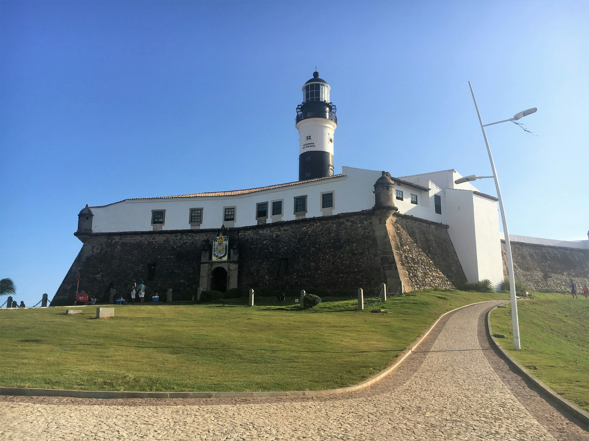
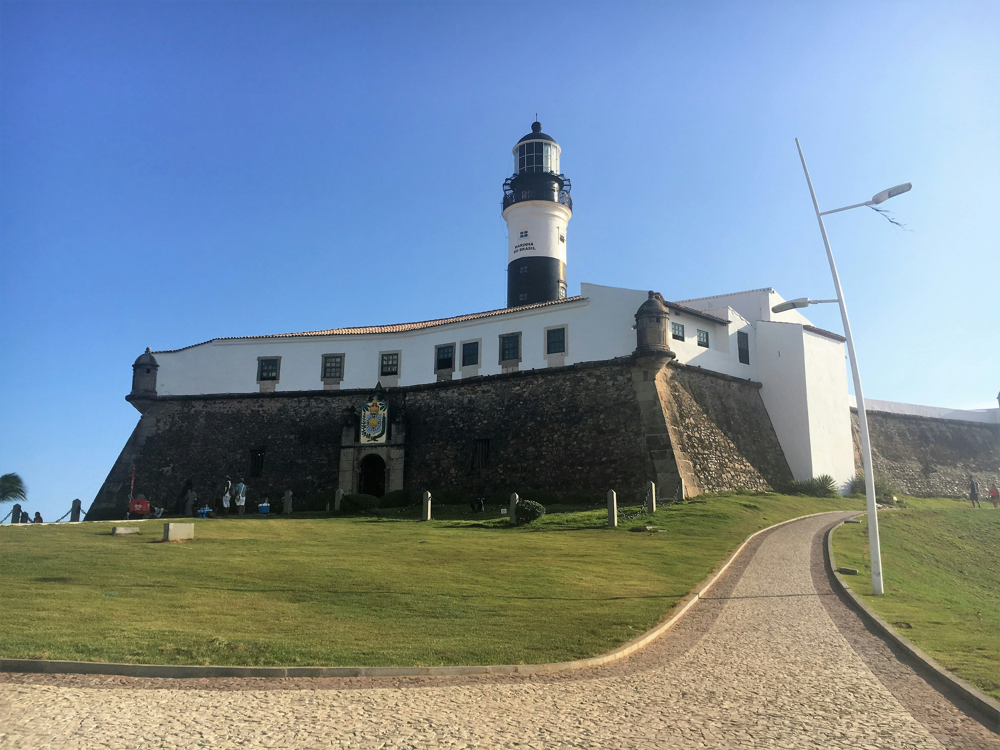
Historia de Rui Barbosa

Rui Barbosa (1849-1923) foi um político, diplomata, advogado e jurista brasileiro. Representou o Brasil na Conferência de Haia, foi reconhecido como “O Águia de Haia”. Foi membro fundador da Academia Brasileira de Letras e seu presidente entre 1908 e 1919. Família e Infância Rui Barbosa nasceu em Salvador, Bahia, no dia 05 de novembro de 1849. Filho de João José Barbosa de Oliveira, médico, deputado provincial e diretor da Instrução Pública da Bahia, e de Maria Adélia Barbosa de Oliveira. Com cinco anos, Rui foi para a escola e em poucos dias já sabia ler e conjugar verbos. Em casa, recebia aulas de piano e oratória. Era uma criança triste e sobrecarregada de estudos. Era obrigado, pelo pai, a ler os clássicos portugueses. Com dez anos já recitava Camões. Em 1861, ingressou no Ginásio Baiano e em 1864 terminou o curso em primeiro lugar, recebendo medalha de ouro e pronunciando seu primeiro discurso em público. Terminando o curso de humanidades, preparava-se para estudar Direito, com apenas 15 anos de idade. Passou então o ano de 1864 estudando alemão, lendo juristas e obras médicas de seu pai. Nessa época escrevia versos tristes e melancólicos.
Formação e Primeiro Emprego
Em 1866, matriculou-se na Faculdade de Direito da cidade do Recife. Participou da Associação Acadêmica Abolicionista, entrou em conflito com um professor e foi obrigado a terminar o curso em São Paulo. Em 1870, graduou-se em Direito, e com dores de cabeça e vertigens, antecipou sua volta para a Bahia. Após o pai perder o emprego, Rui foi trabalhar com Manuel Pinto de Souza Dantas, no Diário da Bahia. Manteve longa amizade com Rodolfo Dantas, filho de seu patrão, e junto com a família passou seis meses na Europa, o que lhe fez bem para a saúde. Pouco depois de sua volta, falece seu pai e em seguida morre Maria Rosa, sua namorada. Torna-se diretor do Diário da Bahia e depois é nomeado, pelo conselheiro Manuel Dantas, para o cargo de secretário da Santa Casa de Misericórdia. Vida Política Membro do Partido Liberal, Rui Barbosa participa de comícios nos teatros e praças, defendendo eleições diretas, liberdade religiosa e regime federativo. No dia 21 de novembro de 1876, depois de uma disputa com o amigo Rodolfo, pelo coração da jovem, casa-se com Maria Augusta Viana Bandeira. Em 1877, com o partido em alta, ingressou na Câmara Baiana e no ano seguinte no Parlamento do Império. Empenhou-se pela reforma eleitoral, pela reforma do ensino e pela libertação dos escravos sexagenários. O controle dos votos feito pelos fazendeiros escravagistas e uma campanha contra os abolicionistas não reelegeu Rui Barbosa. Rui Barbosa voltou aos jornais, em março de 1889. Tornou-se redator chefe do Diário de Notícias. Na luta pelo regime federativo, começou a afastar-se do Partido Liberal. Nesse mesmo ano, durante o governo de Deodoro, exerceu as funções de Ministro da Fazenda. Dois fatos marcaram sua passagem: a Constituição de 1891, quase toda de sua autoria, e o encilhamento. Depois de graves crises e violenta inflação, Rui Barbosa deixou o governo. Em 1893 Rui Barbos assumiu a direção do Jornal do Brasil, onde combatia o governo de Floriano. Em 1895 foi eleito para o Senado. Em setembro eclodiu a Revolta da Armada. Mesmo sem ligação com o movimento, foi acusado de apoiá-lo e obrigado a exilar-se na Inglaterra. Em 1895, de volta do exilo, lutou pela anistia aos punidos por Floriano.
Obras de Rui Barbosa
- Oração aos Moços,
- Migalhas de Rui Barbosa,
- A Imprensa e o Dever da Verdade,
- Rui Barbosa e a Constituição,
- O Dever do Advogado,
- A Questão Social e a Política no Brasil
- Por Dilva Frazão
A deus a Mchado de Assis
"Eu quase não sei dizer mais, nem sei que mais se possa dizer, quando as mãos que se apertavam no derradeiro encontro, se separam desta para a outra parte da eternidade. Nunca ergui a voz sobre um túmulo, parecendo-me sempre que o silêncio era a linguagem de nos entendermos com o mistério dos mortos. Só o irresistível de uma vocação como a dos que me chamaram para órgão desses adeuses me abriria a boca ao pé deste jazigo, em torno do qual ao movimento das emoções reprimidas se sobrepõe o murmúrio do indizível, a sensação de uma existência cuja corrente se ouvisse cair de uma em outra bacia no insondável do tempo, onde se formam do veio das águas sem mancha as rochas de cristal exploradas pela posteridade. Do que a ela se reserva em surpresas, em maravilhas de transparência e sonoridade e beleza na obra de Machado de Assis, di-lo-ão outros, hão de o dizer os seus confrades, já o está dizendo a imprensa, e de esperar é que o diga, dias sem conta, derredor do seu nome, da lápide que vai tombar sobre o seu corpo, mas abrir a porta ao ingresso da sua imagem na sagração dos incontestados, a admiração, a reminiscência, a mágoa sem cura dos que lhe sobrevivem. Eu, de mim, porém, não quisera falar senão do seu coração e da sua alma. Daqui deste abismar-se de ilusões e esperanças que soçobram ao cerrar de cada sepulcro, deixemos passar a glória na sua resplandecência, na sua fascinação, na impetuosidade do seu vôo. Muito ressumbra sempre da nossa debilidade na altivez do seu surto e na confiança das suas asas. As arrancadas mais altas do gênio mal se "
2 de Julho Independência da Bahia
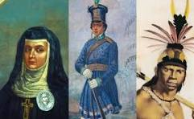"A Independência da Bahia é um movimento que se insere no contexto da Independência do Brasil, no começo da década de 1820. A insatisfação com Portugal existia em algumas partes da Colônia, mas ainda não era generalizada, e havia regiões leais à autoridade portuguesa. Além disso, não existia uma consciência nacional, isto é, um senso de identificação dos colonos enquanto brasileiros ainda muito bem definida. Exemplos disso foram os dois movimentos separatistas que aconteceram em Minas Gerais e Bahia no final do século XVIII, por exemplo. No começo do século XIX, o Brasil e, principalmente, o Rio de Janeiro passaram por grandes transformações. Essas mudanças foram resultado das ações promovidas pelo príncipe regente, D. João. O desenvolvimento e a autonomia conquistada pelo Brasil nesse período, conhecido como Joanino, desagradou a burguesia portuguesa, desejosa de recolonizar o Brasil, submetendo-o novamente aos ditames do Pacto Colonial. Em 1820, foi iniciada em Portugal a Revolução Liberal do Porto, um movimento que procurava estabelecer limites para o monarca luso, mas também buscava ampliar o controle de Portugal sobre o Brasil, anulando a autonomia que havia sido conquistada no reinado de D. João VI (ele tornou-se rei a partir de 1815). Esse cenário deu força para que o separatismo ganhasse força no Brasil, uma vez que as elites daqui não aceitavam a vontade portuguesa de recolonizar o Brasil e pôr fim a todos os avanços que haviam acontecido no período Joanino. O movimento em Portugal forçou D. João VI a retornar para Lisboa, em 1821, fazendo Pedro de Alcântara, herdeiro do trono português, assumir a regência do Brasil. Sob a regência de D. Pedro, a distância entre Brasil e Portugal aumentou drasticamente, uma vez que as ações das Cortes em relação ao Brasil eram cada vez mais intransigentes, aumentando a insatisfação dos brasileiros com relação ao domínio luso. Nesse processo, D. Pedro recusou-se a retornar para Portugal (Dia do Fico), determinou que as ordens das cortes só valeriam no Brasil por meio de sua autorização (Cumpra-se) e, por fim, anunciou a Independência do Brasil, em 7 de setembro de 1822. A declaração de independência do Brasil não encerrou as disputas e desentendimentos com Portugal, mas, sim, os acirrou em algumas partes do país. Isso porque algumas províncias do Brasil se mantiveram leais a Portugal, o que desembocou nas Guerras de Independência, conflitos armados entre tropas favoráveis à Independência e tropas leais a Portugal." Veja mais sobre "Independência da Bahia" e
Hino ao 2 de Julho
Nasce o sol a 2 de julho Brilha mais que no primeiro É sinal que neste dia Até o sol, até o sol é brasileiro Nunca mais, nunca mais o despotismo Regerá, regerá nossas ações Com tiranos não combinam Brasileiros, brasileiros corações Nunca mais, nunca mais o despotismo Regerá, regerá nossas ações Com tiranos não combinam Brasileiros, brasileiros corações Com tiranos não combinam Brasileiros, brasileiros corações (...)
Joana Angelica
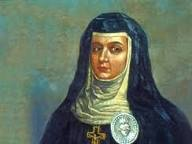Joana Angélica de Jesus, batizada Joanna Angélica de Jesus (Salvador, 12 de dezembro de 1761 — Salvador, 19 de fevereiro de 1822) foi uma religiosa concepcionista baiana, pertencente à Ordem das Reformadas de Nossa Senhora da Conceição e mártir da Independência brasileira.[1] Nascida durante o período colonial, morreu aos 60 anos[2] atingida por um golpe de baioneta quando resistia à invasão pelas tropas portuguesas ao Convento da Lapa, em Salvador.[1] Tornou-se assim, a primeira heroína da independência do Brasil.[3] A freira ficou conhecida como a autora da famosa frase: “Para trás, bandidos! Respeitai a casa de Deus! Só entrarão passando por cima do meu cadáver!”. No entanto, uma extensa pesquisa de documentos referentes a vida de Joana Angélica não encontrou nenhuma evidência de que a frase tenha sido de fato proferida pela Sóror.[4] Conhecida principalmente pelo ato de bravura final de sua vida, Joana Angélica tem hoje sua imagem reconstruída por historiadores que pontuam sua importância também como mártir da fé.[4] Era filha de José Tavares de Almeida e Catarina Maria da Silva. Foi batizada na Freguesia da Santa Sé, em Salvador.[5] Seu pai nasceu no Vale de Cambra, batizado na igreja de São Pedro de Castelões em 5 de setembro de 1728[6], filho de João Tavares de Oliveira e Maria de Almeida. Foi capitão do exército português e, enviado para a Bahia, casou-se com a soteropolitana Catarina Maria da Silva, na Igreja de Nossa Senhora da Piedade dos Frades Capuchinhos, em 30 de janeiro de 1758, filha de Veríssimo da Silva Pereira e de Luísa da Silva Costa. O irmão de Joana Angélica, Domingos Tavares da Silva e Almeida, também serviu a Portugal, tendo ingressado como soldado em 1774, ordenado alferes no Rio de Janeiro, e galgado até o posto de capitão em 1788[7]. Diz-se terem sido uma família rica da capital baiana.[3]
"o que adianta tanto orgulho se você sabe que não vive sem aquela pessoa? me diz para que serve ficar se torturando e respondendo sempre contra o coração? eu sei que nós mulheres possuímos uma Diva interior muito orgulhosa, mais só que as vezes não compensa sofrer se temos a opção de ser feliz ao lado daquele alguém que faz tanto bem, que passa amor e carinho, confesso que muitas vezes o orgulho tem que se recolher para deixar o amor responder mais alto,uma hora é preciso se render ao coração e deixar a razão de lado."
A importância de Teodoro Sampaio
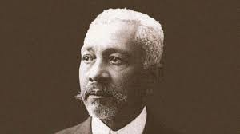Teodoro Sampaio Nome completo Teodoro Fernandes Sampaio Nascimento 7 de janeiro de 1855 Santo Amaro da Purificação, Província da Bahia, Império do Brasil Morte 11 de outubro de 1937 (82 anos) Rio de Janeiro, Distrito Federal, Brasil Nacionalidade brasileiro Etnia Afro-brasileiro Progenitores Mãe: Domingas da Paixão Pai: Manoel Fernandes Sampaio Cônjuge Capitulina Moreira Maia Amália Barreto Sampaio Ocupação engenheiro, geógrafo, escritor e historiador Cargo Deputado federal (1927-1929) Teodoro Fernandes Sampaio[1] (Santo Amaro da Purificação, 7 de janeiro de 1855 – Rio de Janeiro, 11 de outubro de 1937) foi um engenheiro, geógrafo, escritor e historiador brasileiro. Biografia Nasceu no Engenho Canabrava, pertencente ao visconde de Aramaré, hoje localizado no município baiano de Teodoro Sampaio. Era filho da escrava Domingas da Paixão do Carmo e do padre Manuel Fernandes Sampaio.[2] Ainda em Santo Amaro estuda as primeiras letras no colégio do professor José Joaquim Passos. É levado pelo pai, em 1865 para São Paulo e depois para o Rio de Janeiro, onde estuda no Colégio São Salvador e, em seguida, ingressa no curso de Engenharia do Colégio Central. Ao tempo em que estuda leciona nos Colégios São Salvador e Abílio, do também baiano Abílio César Borges (Barão de Macaúbas), sendo ainda contratado como desenhista do Museu Nacional. Formou-se em 1878, quando finalmente volta a Santo Amaro, na Bahia, onde nasceu. Ali, revê a mãe e os irmãos, e comprando, no ano seguinte, a carta de alforria de seu irmão Martinho, gesto que repete com os irmãos Ezequiel (1883) e Matias (em 1885). Sampaio nunca foi um escravo.[3] Em 1880 integra a "Comissão Hidráulica", nomeada pelo imperador Dom Pedro II, sendo o único engenheiro brasileiro entre estadunidenses. Obras na engenharia Teodoro Sampaio (ao centro) visita os campo petrolíferos de Lobato (BA), os primeiros do Brasil. A convite de Orville Derby, que conhecera numa expedição aos sertões sanfranciscanos, participa da Comissão Geográfica e Geológica que realiza primeira medição de base geodésica do Brasil sendo esta executada no Estado de São Paulo (1890).[4] Este trabalho possibilitou a elaboração de diversas cartas topográficas elaboradas em escala 1:100.000, sendo este iniciado pela exploração dos rios Itapetininga e Paranapanema.[4] Antes havia realizado o trabalho de prolongamento da linha férrea de Salvador ao São Francisco (1883). No ano seguinte é nomeado engenheiro chefe da Comissão de Desobstrução do Rio São Francisco, que deixa em virtude do convite de Derby para trabalhar em São Paulo. Ali, dentre outra realizações, participa em 1891 da Companhia Cantareira (engenheiro-chefe), é nomeado Diretor e Engenheiro Chefe do Saneamento do Estado de São Paulo (de 1899 a 1904). Participou da fundação da Escola Politécnica, como parte da comissão do governo estadual composta por ele e Francisco Sales de Oliveira cujo resultado foi a lei de fundação da instituição, em 1893.[5] Institutos Foi, em 1894, um dos fundadores do Instituto Histórico e Geográfico de São Paulo; membro do Instituto Geográfico e Histórico da Bahia (1898), que presidiu em 1922; sócio do Instituto Histórico e Geográfico Brasileiro (1902). Em 1912 presidiu o V Congresso Brasileiro de Geografia. Busto de Teodoro Sampaio no Instituto Geográfico de Histórico da Bahia. Importância de Teodoro Sampaio Teodoro Sampaio, filho de uma escrava negra, foi um dos maiores pensadores brasileiros de seu tempo. Engenheiro por profissão, legou-nos uma bibliografia de vasta erudição geográfica e histórica sobre a contribuição das bandeiras paulistas na formação do território nacional, entre outros temas. É formidável sua sofisticação na percepção da importância dos saberes indígenas (caminhos, mas não só) na odisseia bandeirante. Igualmente digna de consideração foi sua contribuição ao estudo de vários rios brasileiros, de pinturas rupestres em sítios arqueológicos nacionais, do tupi na geografia brasileira e da geologia no País. Neste campo, a geologia brasileira, participou de momentos marcantes, como a expedição de Orville Derby ao vale do rio São Francisco e de comissões específicas. Além disso, foi grande amigo de Euclides da Cunha, e auxiliou o escritor com conhecimentos sobre o sertão baiano na elaboração do livro Os Sertões. Seu nome figura na memória intelectual do País ao lado de Capistrano de Abreu, Joaquim Nabuco, Nina Rodrigues e outros do mesmo patamar. Em sua memória, foram batizados dois municípios brasileiros (na Bahia e em São Paulo) e também uma importante rua da cidade de São Paulo.
Principais Obras
- O rio São Francisco e a chapada Diamantina (1906)
- O tupi na geografia nacional (1901)
- Atlas dos Estados Unidos do Brasil (1908)
- História da Fundação da Cidade do Salvador (póstumo).
“O gênio do nosso povo ninguém o compreendeu melhor do que ele. Dominem em nós as ideias que Euclides agitou e com elas façamos desta Pátria o teatro de uma esplêndida realidade, oficina do trabalho, fecundando-se num largo espírito de solidariedade humana.”
Castro Alves
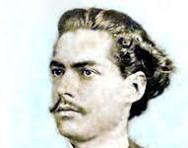Castro Alves, ou Antônio Frederico Castro Alves, é um poeta romântico do século XIX. Nasceu em Muritiba, no estado da Bahia, em 1847, e morreu em Salvador, no ano de 1871. É conhecido como o “Poeta dos Escravos”, em função de suas poesias de cunho abolicionista. O escritor também escreveu poemas de amor, mas sua poesia de cunho social fez dele o principal nome da terceira geração romântica. O poema O navio negreiro é o mais conhecido do escritor Castro Alves, dada a sua importância histórica e política. No entanto, poemas como “Mocidade e morte”, “Dedicatória” e “O laço de fita”, presentes em seu livro Espumantes flutuantes, mostram a sua capacidade de fazer versos sobre variados assuntos.
O poeta brasileiro Castro Alves nasceu em 14 de março de 1847. Seu interesse pela poesia começou na infância, quando estudava na Escola do Barão de Macaúbas. Sua vida literária solidificou-se quando ele ingressou na Faculdade de Direito do Recife em 1864, onde passou a ser conhecido pelos seus versos. Em 1866, o poeta apaixonou-se pela atriz e poetisa portuguesa Eugênia Câmara (1837-1874), que passou a exercer influência em sua vida e obra. Apesar disso, a fama do Poeta dos Escravos não se deve a suas poesias de amor, mas à sua poesia de cunho social. Em 1868, Castro Alves mudou-se para São Paulo, em companhia de Eugênia Câmara, que acabou rompendo com o poeta. A partir daí, a vida do poeta assumiu um caráter trágico. Em 1869, Castro Alves, acidentalmente, durante uma caçada, deu um tiro no pé esquerdo, que precisou ser amputado. Com a saúde frágil desde os 17 anos, devido à tuberculose, não conseguiu vencer a doença e morreu em 6 de julho de 1871, com 24 anos de idade, deixando inacabado o seu livro Os escravos.
Sociedade
Castro Alves nasceu durante o Segundo Reinado, que durou de 1840 a 1889, sob o comando de Dom Pedro II. O debate sobre a escravidão teve avanços importantes nesse período. A abolição da escravatura só ocorreu em 1888, com a assinatura da Lei Áurea pela Princesa Isabel. No entanto, antes disso, outras leis foram promulgadas com vistas a combater a escravidão no Brasil:
- Lei Eusebio de Queiros (1850): proibia o tráfico de escravos.
- Lei do Ventre Livre (1871): declarou livres as crianças nascidas de mães escravas a partir daquela data.
- Lei dos Sexagenários tornou livres escravos com 60 anos de idade ou mais.
Obras de Castro Alves
- Espumas flutuantes
- Gonzaga, ou a revolução de Minas (1875)
- A cachoeira de Paulo Afonso (1876)
- O navio negreiro (1880)
A gripe espanhola em Salvador, 1918: cidade de becos e cortiços
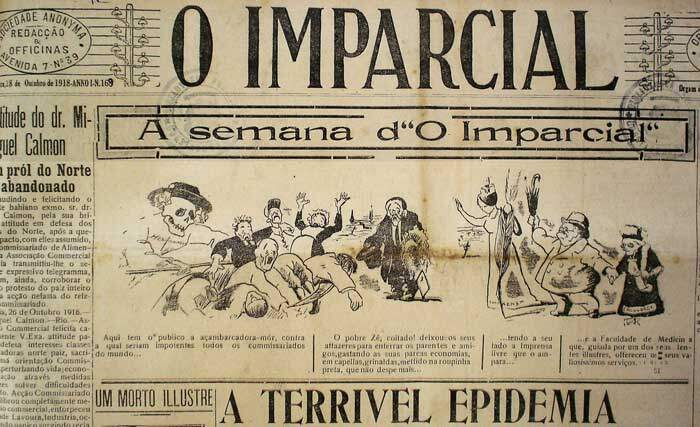Quando a gripe espanhola aportou na Bahia, ali reinava um clima de insatisfação, conflito e insegurança gerado por determinados fatores: as disputas de poder entre as diversas facções políticas; a crise financeira do estado; a carestia e a pobreza generalizada; as greves; as transformações urbanas que desalojaram grupos sociais inteiros, sem, no entanto, dotar a cidade de uma estrutura sanitária satisfatória. As condições de sobrevivência material da maioria da população de Salvador eram consideradas as piores possíveis. Os relatórios apresentados à Diretoria Geral de Saúde Pública por seus inspetores sanitários denunciavam a vida miserável do povo (Secretaria do Interior e Justiça, Diretoria Geral de Saúde Pública, Relatórios de 18 Distritos Sanitários, 1912-1924). As camadas menos privilegiadas da população trabalhavam em excesso e eram pessimamente remuneradas, o que resultava em esgotamento físico e privações como a má alimentação, a moradia em habitações insalubres, mal arejadas, úmidas e escuras onde as pessoas se aglomeravam em compartimentos de capacidade insuficiente , situadas em becos e ruelas que careciam de limpeza e pavimentação, além de um serviço regular de água e esgoto (id. ibid.). O inspetor sanitário do 9º Distrito, dr. Álvaro da Franca Rocha, no seu relatório semestral apresentado à Diretoria Geral de Saúde Pública, afirmava que a miséria era uma porta aberta à infecção, tendo em vista que o organismo enfraquecido não lhe poderia fazer resistência. Para reverter esse quadro, seria necessário tirar o povo da condição miserável em que vivia, "entregue aos vícios, ao alcoolismo, mal alimentado, habitando verdadeiros antros, sem ar e sem luz" (DGSP, Inspetoria do 9º distrito, Bahia, 1913). Por sua vez, em épocas diferentes, nos relatórios apresentados à mesma repartição, o dr. Aristides Novis e o seu sucessor no posto de inspetor sanitário do 5º distrito, o dr. Collatino de Borborema, registraram a falta de esgotos em vários pontos da cidade. Novis (id. ibid.) se horrorizava com o "sistema deplorável [de] fossas fixas, muitas das quais expostas", e com os "antros abjetos, onde a umidade, a treva e o calor abriga[vam] com a população pobre da Bahia, os agentes da sua destruição". Em 1920, de acordo com o relatório apresentado pelo dr. Candido Figueiredo (id. ibid.), inspetor sanitário do 17º distrito, a situação não havia se modificado. O 17º distrito abrangia a "vasta circunscrição sanitária que constitui[a] a zona fabril". No relatório, o dr. Figueiredo lamentava que as fábricas não edificassem vilas operárias, com moradias simples, mas dentro das normas higiênicas, para abrigar o grande número de trabalhadores que ali se concentrava, residindo em prédios condenados por aquela inspetoria, situados "em pontos reconhecidamente insalubres" (id. ibid.). Além disso, os soteropolitanos conviviam com o alto preço dos gêneros de primeira necessidade. A carestia que imperava em Salvador levou um jornalista de A Tarde (13.9.1918, p. 1) a clamar: "Apiedai-vos do povo, já na iminência da fome! Pão, bacalhau, charque e açúcar. Urge baixar-lhes os preços proibitivos para a pobreza. A crise alimentícia torna-se intolerável". Esse estado de coisas era tão preocupante que comerciantes, representantes do poder público e membros da diretoria do Centro Operário se reuniram na Intendência Municipal para tentar resolver o problema (A Tarde, 14.9.1918, p. 1). O objetivo do encontro era estabelecer a conciliação entre as tabelas de preço do comércio atacadista e varejista, no intuito de oferecer algum alívio à população. Entretanto, apesar da tentativa de acordo e de redução de preços, a carestia continuou a oprimir o orçamento do povo baiano, 'justificada' pela carga tributária imposta ao comércio do estado. No decorrer do ano de 1918, em meio a um contexto de crise nas finanças públicas e de carestia, professores e um grupo de operários da Fábrica Conceição, de propriedade da União Fabril, entraram em greve, reivindicando o pagamento de salários atrasados (no caso dos professores) e aumento salarial (no caso dos operários).1 Sobre a greve dos operários, uma notícia publicada no jornal A Tarde informava que a reivindicação de aumento nos salários se devia à "alta clamorosa dos gêneros de primeira necessidade" (24.9.1918). Todavia, ainda que estes trabalhadores se mobilizassem para resolver problemas como a iminência da fome e salários não pagos, não podemos afirmar que na Salvador da República Velha existisse a inserção de um partido organizado pelos trabalhadores no quadro político baiano (Sampaio, 1999). Além do mais, a repressão exercida pelas elites e o analfabetismo da maioria do povo baiano inibiam qualquer iniciativa de participação popular naquele cenário político.2 Assim, pode-se afirmar que a passagem da Monarquia para a República pouco alterou a configuração política do estado da Bahia. As camadas populares estavam excluídas do processo político-partidário, e a elite política baiana, que num primeiro momento repudiou a mudança do sistema político, por fim acabou aderindo a ele, amoldando-se às suas instituições e fazendo com que estas se ajustassem aos seus tradicionais padrões de comportamento. Até a primeira década do século XX, sob a égide da República, líderes políticos como Luiz Vianna, Severino Vieira e José Marcelino monarquistas conservadores continuaram a conduzir a política partidária do estado. Nesse período, o panorama político era dominado pelo personalismo dos coronéis e por uma ainda incipiente organização partidária.3 Coexistiam na Bahia cerca de 13 partidos, ao sabor dos interesses pessoais daqueles que não queriam estar apartados do poder (id. ibid.). O primeiro passo para a criação de um partido político em torno do qual se procuraria congregar os 'elementos representativos da sociedade' foi a fundação, em 1901, do Partido Republicano da Bahia PRB.4 O partido esteve em atividade até 1911, representando os interesses da burguesia agrocomercial e agregando, sob a mesma égide, conservadores, liberais, federalistas e constitu-cionalistas. No entanto, a campanha para sucessão presidencial, em 1910, dividiu a Bahia entre partidários de Ruy Barbosa e Albuquerque Lins, 'civilistas', e partidários de Hermes da Fonseca e Wenceslau Brás, 'hermistas'. A vitória de Hermes da Fonseca resultou no enfraquecimento do PRB, cujos integrantes haviam apoiado a candidatura Ruy/Albuquerque. Além do mais, o governo Hermes tinha interesse em enfraquecer o poder das oligarquias tradicionais. Assim, em 1910, surgiu a necessidade de se criar na Bahia um partido ligado a essa nova feição do poder republicano. Por ele ter liderado a campanha em prol de Hermes da Fonseca e ocupado o cargo de ministro da Justiça e Negócios Exteriores no governo Rodrigues Alves, recaiu sobre J. J. Seabra a incumbência de fundar o Partido Republicano Democrata (PRD), juntamente com elementos da nova geração de políticos anteriormente agrupados em torno da campanha 'hermista'. A partir de então, por um período de 12 anos (de 1912 até 1924), o PRD, sob o comando de Seabra, assumiu um papel de liderança na política da Bahia. Seabra articulou cuidadosamente esse papel convergente do PRD. Após ter sido eleito governador, implementou a Lei da Reforma, de 11 de agosto de 1915, que dava direito ao governante estadual de nomear os intendentes municipais.5 Assim, estabeleceu-se uma dependência dos intendentes em relação ao governador, que procurou também centralizar as ações assistencialistas e a seleção dos funcionários públicos dos municípios. Deste modo, nas duas últimas décadas da República Velha, poucos eram os políticos da Bahia que não rezavam pela cartilha 'seabrista'. Em 1918, em discurso pronunciado no Senado, Seabra afirmaria que as oposições, na Bahia, tinham sido aniquiladas desde a morte de seus principais líderes José Marcelino e Severino Vieira (Seabra, 1918, p. 18).6 Segundo ele, o Partido Democrata "se desenvolveu, prosperou e venceu", mesmo à revelia do senador Ruy Barbosa. O PRD era, na visão daquele político, o único partido da Bahia que poderia ser considerado "forte, organizado, coeso" (id. ibid.). Tal coesão política era importante para o restabelecimento da autoridade do estado, fortemente abalada pelo sistema coronelista vigente, que estorvava a execução de leis e políticas públicas. A existência de um partido forte, cujo líder ocupara o cargo de governador do estado, não modificara radicalmente a estrutura político-social da Bahia durante a República Velha. Nas primeiras décadas do século XX, a ausência da administração pública em áreas fundamentais como a saúde fortalecia o poder local por meio da distribuição de favores à população pelos 'coronéis' ou correlatos. Além disso, na Bahia da Primeira República, a organização e reorganização do serviço público, medida recorrente toda vez que uma nova facção política assumia o governo, constituíam um entrave para seu bom funcionamento. Ao ascender ao cargo de governador, os políticos, além de mudarem as leis, colocavam seus apaniguados nos postos públicos; ocorria que, na maioria das vezes, tais indivíduos não tinham qualquer formação acadêmica ou experiência para ocupar essa função. A política de distribuição de favores e de postos em repartições públicas recrudesceu no governo de Antonio Moniz (1916-1920). Apadrinhado de Seabra, Antonio Ferrão Moniz de Aragão tomou posse, em abril de 1916, para um mandato de quatro anos como governador do estado. Incomodado com a posição de preposto daquele líder político, e ansioso por estruturar uma máquina administrativa própria, este governador procurou controlar mais estreitamente a política municipal, reduzindo o mandato dos intendentes de quatro para dois anos. Com o mesmo intuito e com mais liberalidade ainda que Seabra, distribuiu favores políticos, incorrendo inclusive na prática do nepotismo. Esta postura era criticada e denunciada pela oposição. A respeito disso, em matéria publicada no Diário da Bahia, a facção 'severinista' assim se pronunciava: O assunto que, hoje, nos detém é o importante problema da saúde pública, em favor do qual o sr. Moniz não destina algumas horas de lazer. Sabemos que suas preocupações são múltiplas. Enquanto houver um parente em condições de merecer o auxílio dos cofres, o governador não tem tempo de curar de outros misteres, de menor importância no seu modo de entender (Diário da Bahia, 6.10.1918, p. 1). O nepotismo e o clientelismo perpassaram todas as instâncias administrativas do estado, afetando diretamente as finanças públicas. A situação de penúria financeira que a Bahia atravessava naquele período era em grande parte resultante da política de concessão de favores em vigor. No sistema financeiro do estado, as coletorias fiscais eram peças-chave no sentido de evitar a evasão de impostos interestaduais. Nesse contexto, o coletor de impostos assumia um papel de destaque, na medida em que era responsável pelo serviço de arrecadação do estado. O posto de coletor, assim como a maioria dos cargos públicos estaduais, era alvo de disputas e barganhas no cenário político. Nessas circunstâncias, o coletor estava sempre ligado a uma facção política que dominava uma determinada região. Essa vinculação político-partidária era prejudicial ao erário, tendo em vista que o pagamento de impostos era tido não como uma obrigação cívica, mas como uma punição aplicada aos inimigos políticos. Assim, as rendas do estado, baseadas na arrecadação de impostos sobre a exportação de mercadorias para o estrangeiro ou para dentro do país, sobre bens imóveis urbanos e rurais, sobre transmissão de propriedades e sobre indústrias e profissões, ficavam seriamente prejudicadas (Bahia, Secretaria da Fazenda, 1985, p. 15). O imposto territorial, que era uma importante fonte de receita nos grandes estados da federação desde o início da República, não pôde ser implantado na Bahia em razão da grande oposição por parte das oligarquias agrárias. Para agravar o quadro de desequilíbrio orçamentário do estado, as rendas obtidas com o comércio de exportação eram afetadas pela dependência estrutural que esse tipo de atividade tinha em relação a firmas e capitais estrangeiros (Sampaio, 1999). Uma parte considerável do "excedente gerado pela exportação era transferido para a Europa, através de importações, de remessas de lucros, pagamentos de juros e amortizações da dívida externa" (id. ibid., p. 35 ). A situação fica mais visível quando examinamos, por exemplo, o ano de 1917: nesse período, enquanto a exportação compreendeu 50% da receita ordinária, as rendas das coletorias atingiram pouco mais de 12% (Bahia, Secretaria da Fazenda, 1985, p.16). Assim, o estado se via sem recursos financeiros para executar ou consolidar políticas públicas. Enquanto as ações em prol da saúde coletiva sofriam os efeitos de uma economia dependente do capital estrangeiro e da ingerência do erário público, por sua vez a economia era afetada pelo precário estado sanitário da capital. Quando a febre amarela irrompeu em Salvador, o jornal A Tarde trazia em sua primeira página uma reportagem sobre o grande número de casos registrados e aventava a probabilidade de intervenção da União na Bahia, tendo em vista que "o Tesouro só" não poderia "comportar as despesas de uma larga, completa profilaxia, do ataque radical violento à epidemia" (A Tarde, 24.5.1918, p. 1).7 A matéria em questão versava também sobre os riscos e implicações da erupção de uma epidemia sobre as atividades econômicas do estado. Surtos epidêmicos como este eram prejudiciais à economia baiana, baseada na exportação de produtos como café, tabaco, cacau, açúcar e algodão e dependente do mercado externo. Era, portanto, preocupante saber que "diversos estrangeiros, com importantes negócios no estado", ficaram "visivelmente alarmados" com a possibilidade da erupção de uma epidemia (id. ibid., p. 1). Além disso, se a guerra já havia diminuído a freqüência de navios mercantes no porto de Salvador, criando sérias dificuldades para a circulação de mercadorias e de passageiros, pior seria a situação em caso de epidemia.8 De acordo com o mesmo artigo do jornal A Tarde, a situação poderia se agravar até o ponto de "calamidade pública", e a Bahia ficaria "seqüestrada do resto do mundo, de todo o Brasil", se não fossem "postas em prática medidas urgentíssimas de saneamento" (id. ibid.). Nessas circunstâncias, era preciso preservar a cidade, local por excelência das transações comerciais, pois qualquer ameaça aos negócios repercutiria nos setores dominantes da sociedade baiana. Portanto, cabia ao governo prover um porto 'limpo' aos negociantes, combatendo as doenças que alarmavam ou espantavam os importadores, tendo em vista que os navios de algumas empresas, como atestava a imprensa local, poderiam se recusar a atracar no porto de Salvador por considerá-lo 'sujo'. Entretanto, apesar da reforma urbana empreendida no primeiro governo Seabra, no intuito de ordenar e purificar o espaço público, inclusive o portuário, o estado sanitário de Salvador não era dos melhores.9 Para Ruy Barbosa, representante da Bahia no Senado, Salvador, cidade de quase trezentos mil habitantes, encontrava-se em estado lastimável sem água, luz, escolas e sem pagar ao professorado (Seabra, 1918). De acordo com um artigo publicado no Diário da Bahia (6.10.1918), não havia higiene em Salvador. Para o grupo que dirigia este jornal de oposição, o asfalto que revestia algumas das propaladas avenidas abertas por J. J. Seabra escondiam e mal disfarçavam "aos olhos ingênuos, a miséria, a imundície reinante" (id. ibid., p. 1). Essa opinião era endossada por artigos publicados em outros periódicos que circulavam na cidade em 1918; um dentre eles relatava também que, em Salvador, "cidade de becos e cortiços", não havia uma preocupação com a higiene nem das ruas nem das casas, "em muitas das quais os seus proprietários não [faziam] a menor pintura ou o mais ligeiro reparo" (Diário de Notícias, 18.10.1918, p. 1). O dr. Collatino de Borborema, inspetor sanitário do 5º distrito, traçava um quadro semelhante àquele que aparecia nos jornais. Em relatório semestral dirigido à Diretoria Geral de Saúde Pública, solicitava que o diretor interviesse junto ao poder municipal no sentido de sanar uma série de problemas detectados naquele distrito, tais como a falta de redes de esgotos, de canalização de água, de calçamento e a vegetação crescente em muitas ruas (Relatório apresentado à Diretoria Geral de Saúde Pública, Inspetoria do 5º Distrito, Bahia, 10.6.1918). Assim, podemos inferir que, apesar da reforma urbana iniciada em 1912, o estado de insalubridade da cidade do Salvador era um problema que ainda não tinha sido solucionado. Era crescente, nesse período, a participação de alguns setores da sociedade intelectuais e políticos egressos da classe média e das novas profissões emergentes na defesa de melhores condições de vida e de trabalho para as populações urbanas e rurais do país (Castro Santos e Faria, 2003; Hochman, 1998; Hochman e Lima, 1998). O debate em torno de tais questões tomou impulso a partir da divulgação dos relatórios das expedições científicas organizadas pelo Instituto Oswaldo Cruz, em 1912, que, ao percorrerem a região compreendida entre o sul do Pará, todo o território goiano, o sudoeste de Pernambuco e o norte da Bahia, diagnosticaram a situação de doença e abandono em que se encontrava a população do interior do país (id. ibid.). A partir deste reencontro com os 'sertões', as ações em saúde pública passaram a representar uma via para conformação da identidade nacional. Assim, 'nacionalistas de diversos matizes' passaram a considerar o saneamento das áreas urbanas e rurais como um fator primordial para o progresso do país (Castro Santos e Faria, 2003, p. 29). Tal dimensão da nacionalidade foi encampada por parte da elite, cada vez mais consciente do processo de interdependência sanitária e territorial (Hochman, 1998; Swaan, 1988, p. 1-142). Essa percepção de interdependência10 se intensificou à medida que se compreendia que as epidemias afetavam ricos e pobres indistintamente, e que as endemias eram um fator de entrave ao desenvolvimento econômico do país. A consciência dessa interdependência entre elites e pobres é central ao processo coletivizador que se iniciava no Brasil da Primeira República. O movimento em prol do saneamento do Brasil era amplamente divulgado pelos meios de comunicação da época, e o ideário sanitarista aos poucos foi se incorporando ao consciente coletivo. Em Salvador, os órgãos de imprensa de oposição se apropriaram desse discurso para denunciar o precário estado sanitário da Bahia, sem, no entanto, questionar as condições de pobreza a que estava submetida a maior parte da população baiana. Pode-se compreender melhor como isso acontecia ao examinar a seguinte matéria jornalística sobre o impaludismo veiculada pela imprensa baiana: O impaludismo lavra e o governo é indiferente. É uma reclamação de todos os dias. Desde os arrabaldes da Capital, o recôncavo, o litoral e o interior, até a zona opulenta do sul o clamor é uníssono contra os estragos do impaludismo! Ora, são as próprias vítimas, abatidas pela endemia maldita, ora são homens de consciência e coração, revoltados pelo sofrimento de seus semelhantes que vêm à A Tarde rogar que ela brade alto contra a incúria e criminosa indiferença que o governo assiste, impassível, a inutilização e extermínio da população rural do Estado. (...) Na dificuldade em que nos achamos para levar avante o momentoso problema do saneamento da Bahia, lembramos que desde já, se poderia fazer alguma cousa no tocante ao impaludismo: a vendagem do quinino a preços módicos, entrando nesse serviço a fiscalização do Estado, não só quanto aos preços elevados, como quanto às falsificações. Não ignoram os que conhecem o interior, a impossibilidade em que se acham as populações pobres de obter o quinino. (...) Esses infelizes doentes, maltratados, são outras tantas sementeiras onde o mosquito vai colher e disseminar pelas pessoas sãs, inoculando-lhes no sangue, os germes do impaludismo (A Tarde, 8.5.1918, p. 1, grifos nossos). A percepção de que indivíduos pobres e doentes poderiam se tornar 'sementeiras' de doenças, disseminando-as entre as 'pessoas sãs', foi um dos elementos propulsores do movimento sanitarista brasileiro. Além disso, a doença ameaçava a reserva de trabalhadores potenciais, recrutas, consumidores e partidários políticos, tornando-se por isso necessário à elite trabalhar em prol da harmonia e também da saúde pública, implementando políticas públicas. Entretanto, na Bahia, além da politicagem, a falta de recursos técnicos e financeiros, tanto estaduais quanto municipais, dificultavam a implementação de políticas públicas de saúde. A chegada da gripe espanhola contribuiu para desnudar as fragilidades do serviço de saúde pública, já que agravou as condições sanitárias do estado. A epidemia de gripe tornou-se então um instrumento das diversas facções políticas que se digladiavam pelo controle do poder. Os jornais eram os veículos dessa disputa, como se pode observar a seguir.
A 'espanhola' aporta em Salvador
É difícil precisar o momento da entrada da 'espanhola' na Bahia. Para o governador do estado à época, a epidemia iniciou-se em 27 de setembro de 1918 (Aragão, 1919). Por sua vez, o jornal A Tarde informava que em 24 de setembro de 1918, "a epidemia desconhecida" já assolava a Bahia, tendo sido verificados "cerca de setecentos enfermos nos quartéis, nos hospitais em casas particulares e em todos os centros de aglomeração de operários" (A Tarde, 25.9.1918, p. 1). Contudo, se considerarmos o período de transmissibilidade da doença e o intervalo de tempo necessário para que os seus primeiros sinais se manifestassem, perceberemos que o mal já estava entre os baianos antes das datas assinaladas, ainda que não tenha sido registrado pelos órgãos de imprensa nem pela Diretoria Geral da Saúde da Bahia. Na Bahia, embora as autoridades políticas, médicas e sanitárias acompanhassem, pelos jornais, a evolução simultânea da epidemia em vários lugares do mundo, elas pareciam considerar remota a possibilidade de que um mal que grassava em lugares tão distantes do Brasil pudesse vir a vitimar também o povo baiano. Mesmo quando os primeiros rumores da existência de uma epidemia de gripe em Salvador começaram a circular, ainda assim as autoridades não deram a devida importância tratava-se apenas de uma enfermidade familiar à sociedade baiana que, até então, não tinha apresentado graves conseqüências. Portanto, em um primeiro momento, o governo baiano, assim como os governantes de outras partes do mundo, assumiu uma postura passiva, propalando a benignidade da doença. Para a imprensa, a moléstia se espalhava com uma rapidez surpreendente, e, assim como a gripe, as críticas ao imobilismo das autoridades em face da epidemia reinante vinham 'a galope'. As matérias sobre o assunto continham um misto de indignação e ironia diante da paralisia que dominava a Diretoria de Saúde Pública da Bahia. Um artigo do jornal A Tarde traduzia a perplexidade da população, ao afirmar que "ninguém" sabia "por que a direção interina da S.P.B. não cogita[va] do caso, não providenciando (...) o saneamento" e a "aplicação de medidas profiláticas". De acordo com a matéria, a postura do governador era de indiferença "diante da percentagem assombrosa de enfermos na capital" (A Tarde, 25.9.1918, p. 1) As autoridades pareciam preferir negar o fato. Abordados pelos jornais do Rio de Janeiro, os políticos da situação, bem como as autoridades médicas, atribuíam à imprensa de oposição a responsabilidade pelo caráter alarmista que tomava a notícia de um simples surto de gripe. Solicitado a dar a sua opinião a um jornal da capital federal, o deputado Arlindo Leone, partidário de J. J. Seabra, afirmou que a epidemia de gripe não passava de uma invenção de oposicionistas sem escrúpulos que faziam de tudo para desmoralizar a Bahia (Diário de Notícias, 30.9.1918). O secretário do Interior, Justiça e Instrução Pública do Estado da Bahia, dr. Gonçalo Moniz, ao ser entrevistado pelo jornal carioca A Rua, descartou qualquer possibilidade de haver epidemia de gripe na Bahia, argumentando que, caso tivesse ocorrido algo de anormal, ele teria sido imediatamente avisado pelas autoridades sanitárias.11 Portanto, não acreditava na "devastação anunciada" pela imprensa de oposição (A Tarde, 30.9.1918). Essas declarações foram imediatamente divulgadas pelos órgãos da imprensa oposicionista baiana, que não pouparam Arlindo Leone nem Gonçalo Moniz de sua crítica mordaz. Em matéria de primeira página, o jornal A Tarde (30.9.1918, p. 1) propalava que o dr. Gonçalo Moniz, ao afirmar que não havia uma epidemia de gripe em Salvador, perdera a compostura própria das suas "poses de sábio indígena", fazendo jus ao apelido de "mentira".12 Por sua vez, o Diário da Bahia (5.10.1918, p. 1) denominava-os de "próceres da mentira", acrescentando que estes que negavam a existência da moléstia em Salvador eram aqueles que viviam na capital da República, "parasitariamente, sugando, em pura perda, os cofres públicos". Acusada de explorar os fatos para denegrir a imagem do Bahia, a facção política 'severinista' que dirigia o Diário reagiu contra-atacando. Publicou uma nota em que se justificava diante dos leitores, afirmando que, se colocava "a nu as chagas miseráveis da Bahia", era porque desejava promover "uma transformação absoluta dos costumes, das práticas usadas" naquele período pelo grupo que estava à frente do governo estadual (Diário da Bahia, 6.10.1918, p. 1). Para a oposição, a Bahia era comandada por um "bando aventureiro", indiferente a qualquer outra coisa que não seus interesses pessoais, a ponto de ter arrastado o estado para o desastre financeiro e provocado o abandono de "vários ramos da administração pública". Para arrematar a composição do quadro desastroso do governo baiano, a referida matéria destacava o problema da saúde pública, "em favor do qual o sr. Moniz não destina[va] algumas horas de lazer". E ironizava: "Felizes de nós se pudéssemos, conscientemente, tecer louvores à ação governamental..." (id. ibid., p. 1).
"De qualquer modo, nem todos os baianos podiam ficar em casa para ser cuidados por familiares ou empregados domésticos; muitos não tinham teto algum, viviam expostos a toda sorte de problemas, sanitários ou não. Não surpreende, então, que os membros das camadas mais baixas da sociedade morressem em porcentagem superior à relativa aos membros da classe média e alta. Como Souza enfatiza, a doença e suas estatísticas só ganham significado pleno no contexto social em que se inserem. Em seu penúltimo capítulo, a autora mostra que as providências tomadas pelas autoridades políticas tinham pouco efeito. Não era suficiente publicar anúncios em jornais ou distribuir panfletos; igualmente não era suficiente informar aos médicos e profissionais de saúde pública como tratar a doença, pois a maioria da população baiana era analfabeta e não podia ter acesso aos anúncios e demais informações provenientes desses profissionais. Além do mais, a crônica falta de médicos e a pobreza da maioria da população praticamente impediam que a gente do povo consultasse um médico e consumisse medicamentos comerciais. Na verdade, as medidas tomadas pelo governo e estabelecimentos médicos sinalizavam para o despreparo quase completo das autoridades em lidar com qualquer Pandemia."
Tomé de Souza
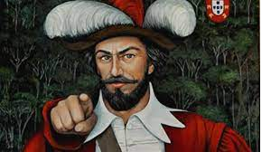Tomé de Sousa, militar e político português, fidalgo da Casa Real, em 1547 foi escolhido para ocupar o cargo de primeiro governador geral (1549 a 1553) do Brasil durante o período colonial. O fidalgo Tomé de Sousa (nome original, Thome de Souza), filho do prior de Rates, João de Sousa e de Mércia Rodrigues de Faria, nasceu na Freguesia Portuguesa de Rates, por volta de 1503. Foi um importante militar e político português que participou como soldado das expedições à África e Índias. Em 1538, casou-se com Dona Maria da Costa e faleceu em Lisboa, em 28 de janeiro de 1579, aos 76 anos.
Governador
As Capitanias Hereditárias representou um sistema implementado pela Coroa Portuguesa com o intuito de povoar as terras brasileiras e protegê-las das invasões estrangeiras. No entanto, o sistema de capitanias fracassou por falta de recursos, abandono, ataques indígenas e outros problemas. Entretanto, duas delas prosperaram, São Vicente e Pernambuco, com a produção açucareira. Para tanto, em 1548, a Coroa Portuguesa comandado por Dom João III, resolve implementar um sistema paralelo às Capitanias, para consolidar o poder e a administração colonial bem como proporcionar o desenvolvimento econômico da região; esse sistema foi denominado: Governo Geral. Com efeito, a Coroa concedia aos governadores gerais, indicados pelo poder Real, a responsabilidade de cuidar dos assuntos sociais, políticos e econômicos do Brasil. Tomé de Sousa, escolhido pela Coroa Portuguesa, chegou ao Brasil em 29 de março de 1549 na Vila do Pereira, Bahia. Ele criou o primeiro bispado do Brasil (posto concedido ao bispo dom Pero Fernandes Sardinha) e os cargos de capitão-mor, ouvidor-mor, alcaide-mor e provedor-mor, com intuito de dividir o trabalho administrativo, econômico, jurídico e militar. Durante seu governo, incentivou a produção açucareira, cedeu terras aos colonos e fundou as câmaras municipais. Segundo a carta do Rei: “Eu, el-rei Dom João III, faço saber a vós, Tomé de Sousa, fidalgo da minha casa, que ordenei mandar fazer nas terras do Brasil uma fortaleza e povoação grande e forte, na Baía de Todos-os-Santos. (...) Tenho por bem enviar-vos por governador das ditas terras do Brasil.” Nesse ínterim, a mando da Coroa Portuguesa, em 1549, fundou a primeira cidade brasileira, considerada a primeira capital do país, Salvador (originalmente denominada Salvador da Bahia de Todos os Santos), com o intuito de centralizar o governo e administrar o país, desde criar engenhos, realizar construções, fomentar a economia local, explorar, proteger a colônia e catequizar os índios. As importantes construções realizadas em seu governo foram: a Casa da Câmara, o Colégio dos Jesuítas e a Igreja Matriz. Sem espanto, Tomé chegou ao Brasil acompanhado de cerca de 1000 homens (soldados, profissionais, funcionários públicos) e dentre eles alguns jesuítas, do qual se destaca Padre Manuel da Nóbrega, encarregados de catequizar os índios e transformá-los em Cristãos. No final de seu mandato, em 1553, funda a Vila de Itanhaém e constrói o forte de Bertioga. Quando retorna à Portugal foi nomeado Vedor d'el-rei, cargo responsável pela administração dos empreendimentos da Coroa. Após sua saída, entrou no cargo Duarte da Costa, que governou de 1553 a 1558.
" Os governadores-gerais: Tomé de Sousa e Duarte da Costa Favorito tome de souza Chegada de Tomé de Sousa à Bahia. Gravura do início do século XIX (Crédito: Biblioteca Municipal de São Paulo) Tomé de Sousa (1503-1579) foi o primeiro a ocupar um governo-geral (1549 a 1553), em nome da Coroa lusitana. Cruzando as águas atlânticas, aportou em terras ultramarinas em 1549 para cumprir a missão recebida, que incluía enfrentar forasteiros vis e infames, denominados assim pelo Reino de Portugal, os quais desde o descobrimento faziam incursões, pilhando especialmente o pau-brasil retirado da Mata Atlântica. O governador, então, fundou a cidade de Salvador, a primeira da América portuguesa, localizada em lugar que entendeu conveniente: às margens da Baía de Todos os Santos, centro geográfico do litoral pertencente a Portugal, de acordo com o Tratado de Tordesilhas. Essa posição permitiria, segundo o regimento de Tomé de Sousa, “dar favor e ajuda” às capitanias que necessitassem, como almejava D. João III (1502-1557). Tomé de Sousa instalou engenhos, incentivando a criação de gado, e estabeleceu vilas e cidades, fixando as pessoas nas terras, impedindo e dificultando as incursões da pirataria oficial e da criminosa, que prosseguiam ignorando os termos do acordo celebrado em 1494 entre Portugal e a Espanha. Enquanto isso acontecia, reafirmando a autoridade lusa e consolidando a aventura da colonização em áreas distantes, nas terras do sul – região correspondente à capitania do Rio de Janeiro –, a desejada e esperada ajuda não acontecia. Alertas não faltaram. Os riscos e as ameaças não cessavam. A presença francesa espalhava-se, confirmando as notícias que o governo português recebia por variada correspondência. A situação era de insegurança nas terras do entorno da Baía de Guanabara, onde, possivelmente, muitos se perguntavam: o que estaria para acontecer? As dificuldades permaneciam vivas e latentes, sem soluções amplas e eficazes. Os recursos nem sempre eram suficientes, os povos indígenas não eram amistosos, e havia, ainda, a questão da extensão do território. Eram aspectos significativos, que dificultavam ações efetivas naquele mundo ainda tão inexplorado. As administrações seguintes deveriam reforçar a defesa das capitanias, reafirmando o poder de Portugal nas terras ultramarinas. Duarte da Costa (?-1560) foi o segundo indicado para ocupar o governo-geral. Durante sua administração (1553-1558), ocorreram novas incursões de estrangeiros oriundos de monarquias europeias – como os franceses, “incansáveis inimigos de Portugal”
A revolta dos Males
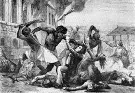Na madrugada de 25 de janeiro de 1835, um domingo, aconteceu em Salvador ma revolta de escravos africanos. O movimento de 1835 é conhecido como Revolta dos Malês, por serem assim chamados os negros muçulmanos que o organizaram. A expressão malê vem de imalê, que na língua iorubá significa muçulmano. Portanto os malês eram especificamente os muçulmanos de língua iorubá, conhecidos como nagôs na Bahia. Outros grupos, até mais islamizados como os haussás, também participaram, porém contribuindo com muito menor número de rebeldes. A revolta envolveu cerca de 600 homens, o que parece pouco, mas esse número equivale a 24 mil pessoas nos dias de hoje. Os rebeldes tinham planejado o levante para acontecer nas primeiras horas da manhã do dia 25, mas foram denunciados. Uma patrulha chegou a uma casa na ladeira da Praça onde estava reunido um grupo de rebeldes. Ao tentar forçar a porta para entrarem, os soldados foram surpreendidos com a repentina saída de cerca de sessenta guerreiros africanos. Uma pequena batalha aconteceu na ladeira da Praça, e em seguida os rebeldes se dirigiram à Câmara Municipal, que funcionava no mesmo local onde funciona ainda hoje. A Câmara foi atacada porque em seu subsolo existia uma prisão onde se encontrava preso um dos líderes malês mais estimados, o idoso Pacifico Licutan, cujo nome muçulmano era Bilal. Este escravo não estava preso por rebeldia, mas porque seu senhor tinha dívidas vencidas e seus bens, inclusive Licutan, foram confiscados para irem a leilão em benefício dos credores. O ataque à prisão não foi bem sucedido. O grupo foi surpreendido no fogo cruzado entre os carcereiros e a guarda do palácio do governo, localizado na mesma praça. Daí este primeiro grupo de rebeldes saiu pelas ruas da cidade aos gritos, tentando acordar os escravos da cidade para se unirem a eles. Dirigiram-se à Vitória onde havia um outro grupo numeroso de malês que eram escravos dos negociantes estrangeiros ali residentes. Após se unirem nas imediações do Campo Grande, os rebeldes atravessaram em frente ao Forte de São Pedro sob fogo cerrado dos soldados, indo dar nas Mercês, de onde retornaram para o centro da cidade. Aqui atacaram um posto policial ao lado do Mosteiro de São Bento, outro na atual Rua Joana Angélica (imediações do Colégio Central), lutaram também no Terreiro de Jesus e outras partes da cidade. Em seguida desceram o Pelourinho, seguiram pela Ladeira do Taboão e foram dar na Cidade Baixa. Daqui tentaram seguir na direção do Cabrito, onde tinham marcado encontro com escravos de engenho. Mas foram barrados no guartel da cavalaria em Água de Meninos. Neste local se deu a última batalha do levante, sendo os malês massacrados. Alguns que tentaram fugir a nado terminaram se afogando. A revolta deixou a cidade em polvorosa durante algumas horas, tendo sido vencida com a morte de mais de 70 rebeldes e uns dez oponentes. Mas o medo de que um novo levante pudesse acontecer se instalou durante muitos anos entre os seus habitantes
livres. Um medo que, aliás, se difundiu pelas demais províncias do Império do Brasil. Em quase todas elas, principalmente na capital do país, o Rio de Janeiro, os jornais publicaram notícias sobre o acontecido na Bahia e as autoridades submeteram a população africana a uma vigilância cuidadosa e muitas vezes a uma repressão abusiva. Salvador tinha na época da revolta em torno de 65.500 habitantes, dos quais cerca de 40 por cento eram escravos. Entre a população não-escrava a maioria era também formada por africanos e seus descentes, chamados na época de crioulos quando eram negros nascidos no Brasil, além dos mestiços de branco e negro, chamados de pardos, mulatos e cabras. Juntando os negros e mestiços escravos e livres, os afro-descendentes representavam 78 por cento da população. Os brancos não passavam de 22 por cento. Entre os escravos, a grande maioria (63 por cento) era nascida na África, chegando a 80 por cento na região dos engenhos de açúcar, o Recôncavo. Esses escravos eram trazidos de diversos portos da costa africana. Um grande número vinha de Luanda, Benguela, Cabinda, mas na época da revolta de 1835 a grande maioria era embarcada nos portos do golfo do Benim (portos de Ajudá, Porto Novo, Badagri, Lagos). Foram alguns desses últimos grupos os mais diretamente ligados à revolta. Eles podiam ser de diversas origens, segundo a língua que falavam: iorubá, haussá, fon, mahi, nupes, bornus etc. Na Bahia a maioria desses escravos era conhecida por nomes diferentes daqueles que tinham na África: os de língua iorubá chamavam-se nagôs, os fon e mahi eram conhecidos como jejes, os nupes como tapas. Em 1835 a grande maioria dos escravos da Bahia nascidos na África era realmente de língua iorubá, cerca de 30 por cento. Eram como nagôs. Muitos deles professavam a religião muçulmana, embora a maioria dos nagôs fosse de fato adepta do candomblé dos orixás. A cidade de Salvador tinha uma economia baseada na escravidão, que girava em torno da cana-de-açúcar produzida na região denominada de Recôncavo, terras que circundam a Baía de Todos os Santos. Ali também se plantava o fumo, que era exportado para a Europa e para a África. Na África o fumo era utilizado na compra de escravos. No Recôncavo, os escravos eram empregados em todo tipo de atividade rural, não apenas no setor açucareiro e fumageiro. Eles também labutavam na criação de gado e no cultivo da mandioca. A farinha de mandioca já era naquela época um item fundamental da dieta de ricos e pobres, senhores e escravos. Como o fumo, a farinha estava também ligada ao tráfico, pois constituía um dos principais alimentos a bordo dos navios negreiros. Da mesma forma, os escravos eram utilizados nas vilas e cidades, sobretudo na capital, onde se ocupavam no trabalho doméstico, nos diversos ofícios (pedreiro, sapateiro, ferreiro), nas atividades do mar (marinheiro, remador, canoeiro, pescador). Eles lavravam a terra em pequenas plantações existentes na periferia da cidade, trabalhavam em variados tipos de construção pública e privada, vendiam uma grande variedade de pequenas mercadorias, principalmente comida pronta, verduras, peixe, carne. E eram empregados no transporte de volumes grandes e pequenos, como caixas de açúcar, barris de cachaça, mercadorias importadas, água de gasto e potável, dejetos humanos, balaios de compras e até cartas eram levadas ao correio por escravos. Eles também transportavam pessoas nas cadeiras de arruar, talvez a mais típica atividade dos escravos nas ruas de Salvador.
Uma cadeira de arruar do século XIX. Museu de Arte da Bahia
As ocupações dos presos por suspeita de participação na revolta de 1835 refletem a variedade de atividades desempenhadas pelos escravos urbanos. Havia entre eles lavradores, remadores, domésticos, pedreiros, sapateiros, alfaiates, ferreiros, armeiros, barbeiros, vendedores ambulantes, carregadores de cadeira, entre outras atividades. A grande maioria dos rebeldes se empregava em ocupações tipicamente urbanas. Foram pouquíssimos os ocupados na lavoura, por exemplo. Um ou outro tinha vindo do Recôncavo para participar do levante em Salvador. Na escravidão urbana os cativos gozavam de maior independência do que na escravidão rural, e isso facilitou muito a organização do movimento de 1835. Em geral, os escravos percorriam por toda a cidade trabalhando para seus próprios senhores ou, principalmente, contratados por terceiros para serviços eventuais. Muitos escravos sequer moravam na casa senhorial. Chamados negros ou negras de ganho, e também de ganhadores ou ganhadeiras, esses homens e mulheres escravizados contratavam com seus senhores entregar certa quantia diária ou semanal de dinheiro, e tudo que ultrapassasse esta quantia podiam embolsar. O escravo que trabalhasse muito e poupasse muito podia após cerca de nove longos anos comprar sua liberdade, e muitos assim o fizeram. Alguns chegavam se tornar prósperos homens de negócio, que era a ocupação mais comum dos que prosperavam. Muitos africanos, depois de libertos da escravidão, tornavam-se eles próprios senhores de escravos. Calcula-se em cerca de 7 por cento a proporção dos africanos libertos na população de Salvador na época da revolta dos malês. Eles representariam em torno de 25 por cento da população africana na cidade. Africanos escravos e libertos com freqüência trabalhavam e viviam juntos, desempenhando as mesmas tarefas, morando nas mesmas casas. No trabalho de rua organizavam-
"Infelizmente não sabemos detalhes do que planejavam fazer os rebeldes depois de vitoriosos. Há indícios de que não tinham planos amigáveis para as pessoas nascidas no Brasil, fossem estas brancas, negras ou mestiças. Umas seriam mortas, outras escravizadas pelos vitoriosos malês. Isso refletia as tensões existentes no seio da população escrava entre aqueles nascidos na África e aqueles nascidos no Brasil. Que fique bem claro: os negros nascidos no Brasil, e por isso chamados crioulos, não participaram da revolta, que foi feita exclusivamente por africanos. Por isso, se o levante tivesse sido um sucesso, a Bahia malê seria uma nação controlada pelos africanos, tendo à frente os muçulmanos. Talvez a Bahia se transformasse num país islâmico ortodoxo, talvez num país onde as outras religiões predominantes entre os africanos e crioulos (o candomblé e o catolicismo) fossem toleradas. De toda maneira a revolta não foi um levante sem direção, um simples ato de desespero, mas sim um movimento político, no sentido de que tomar o governo constituía um dos principais objetivos dos rebeldes."
Maria Quiteria
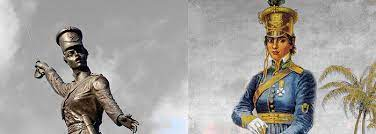A baiana Maria Quitéria foi uma das heroínas da Independência do Brasil na Bahia, concretizada em 2 de Julho de 1823. A jovem que sabia atirar, cavalgar, caçar e pescar tinha atributos para engrossar as fileiras do Exército brasileiro na luta contra o domínio português nas lutas pela Independência do Brasil na Bahia.
No entanto, por ser mulher, Maria Quitéria não poderia servir. Para ser a primeira mulher a lutar no Exército Brasileiro, e entrar para os livros de História, Quitéria deixou a transgressão como marca e legado para mulheres e homens
Nascida em um distrito de Feira de Santana, a 100 km de Salvador, hoje Maria Quitéria dá nome ao local onde nasceu. O povoado de São José Itapororoca foi rebatizado em homenagem à filha ilustre. Primogênita de três filhos, a heroína da Independência era filha da baiana Quitéria Maria de Jesus e do português Gonçalo Alves de Almeida.
Soldado Medeiros
Maria Quitéria se viu tomada de responsabilidades ainda na infância, em um século em que mulheres eram obrigadas a assumir trabalhos domésticos desde novas, como explica Cleane Oliveira, diretora-presidente da Fundação Egberto Costa, que administra o memorial da heroína em Feira de Santana. "Aos 10 anos de idade, ela testemunhou a morte da mãe. Então ela assumiu, muito precocemente, a gestão da casa, tomando conta dos irmãos. Ela caçava, pescava, também fazia os afazeres da casa, e assim ela foi tomando essa noção de responsabilidade", diz Cleane Oliveira. Com a morte da mãe de Maria Quitéria, o Gonçalo se casou outras duas vezes. A primeira madrasta morreu de forma prematura, e a má relação com a segunda companheira do pai foi o estopim para o início trajetória independente da jovem heroína.
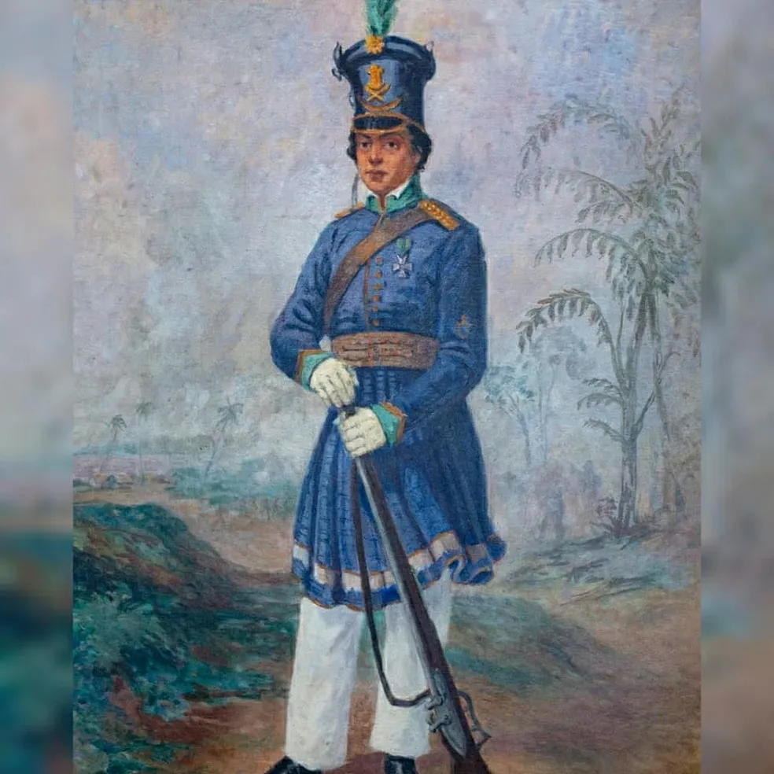"Rosa Maria ela é uma mulher de temperamento forte, tanto quanto a própria Maria Quitéria. Então, as duas elas duelaram entre si na questão da gestão da casa. Ela era a irmã mais velha, tinha a questão de tomar conta dos irmãos e chegou essa outra que não tornou a vida de Maria Quitéria muito fácil. Esse é um motivos também que a gente deve entender que também levou ela a sair para a guerra", conta a responsável pelo memorial da heroína. A pesquisadora Lélia Fernandes destaca que a jornada de Maria Quitéria para se tornar Soldado Medeiros passou por roupas emprestadas e entrosamento com equipes de batalha, começando em Cachoeira, berço da Independência do Brasil no Recôncavo Baiano, até chegar em Salvador. "Ela recebeu esse epíteto de Soldado Medeiros visto que ela, além de tomar as roupas emprestadas do cunhado, que era José Medeiros, também tomou o sobrenome. A partir daí ela entrou no Batalhão dos Periquitos, lá em Cachoeira. Ela se entrosou mesmo com a tropa e participou de várias batalhas. Ela atravessou o Rio Paraguaçu com a água quase no pescoço, e teve grande vitória", narra Lélia.
A coragem e destreza de Maria Quitéria foram reconhecidas pelos próprios colegas e também pelo então imperador Dom Pedro I. Após ter o disfarce reconhecido, a heroína escolheu continuar nos combates, a contragosto do pai, como explica Cleane. "Ela lutou e conseguiu se destacar no no batalhão dela. Em três batalhas específicas ela se destacou: na de Pirajá, na defesa de Ilha da Maré e na de Piatã, onde ela entrou em uma trincheira, rendeu os portugueses e os levou, sozinha, para o acampamento. A partir desse feito ela foi condecorada a cadete. Rapidamente o pai dela descobriu onde ela estava, e foi chamá-la de volta, muito chateado", complementa Cleane. "Por causa da bravura desempenhada por ela em combates,
"O pai dela a amaldiçoou. Ela então pediu uma carta de conciliação a Dom Pedro, quando ela foi ao Rio de Janeiro para ser condecorada. Dom Pedro escreveu uma carta de próprio punho falando da bravura e da importância da participação de Maria Quitéria nos combates na Independência da Bahia", diz Cleane.
Videos sobre a Bahia
Sobre nós
Ola, esse site foi criado com muito esforço e dedicação.Mostrando um pouco sobre a historia de grandes personagem nascido na Bahia ou com grandes feitos na Bahia. Muitas pessoas de hoje não sabe nem 10% da nossa historia, e com isso, não sabem valorizar a nossa cultura e origem. Se as pessoas soubessem um pouco sobre nossa Historia , deixariam de valorizar mais a cultura de fora em detrimento da nossa, embora varias pessoas usem nossa cultura para fins lucrativos maliciosos, mas a historia esta ai para ser interpretada e valorizada! Misael Silva